Membuat dan Mengelola Tasking Manager
Tujuan Pembelajaran:
- Menjelaskan fungsi dari Tasking Manager dalam Konteks Pemetaan Partisipatif
- Mengoperasikan cara membuat Tasking Manager
- Mengoperasikan cara mengatur Tasking manager yang sudah ada
Anda tentunya sudah mengetahui bagaimana cara menggunakan tasking manager untuk melakukan kegiatan pemetaan secara bersama-sama. Ketika Anda menggunakan tasking manager yang tidak sesuai dengan wilayah yang Anda inginkan, maka Anda ingin membuat tasking manager untuk wilayah Anda sendiri. Pada modul ini, Anda akan mempelajari bagaimana cara membuat tasking manager. Pembuatan tasking manager membutuhkan orang yang bertanggung jawab atas tasking tersebut, agar data OSM yang dihasilkan memiliki kualitas data yang baik. Juga hal ini dikarenakan awal dibuatnya tasking manager untuk keperluan pemetaan sebagai respon kebencanaan di suatu wilayah.
I. Apa itu Tasking Manager
a. Definisi Tasking Manager
Tasking Manager merupakan sebuah alat yang dibuat secara khusus untuk melakukan pemetaan secara kolaboratif dan partisipatif. Tasking Manager memungkinkan Anda untuk melakukan pemetaan di suatu wilayah secara bersama-sama dengan pengguna OSM yang lain dengan membagi-bagi area pemetaan di wilayah tersebut. Tujuan Tasking Manager adalah untuk membagi pekerjaan pemetaan ke dalam beberapa grid /kotak yang berbeda sehingga setiap orang dapat memilih grid/kotak untuk dikerjakan. Selain itu, Tasking Manager juga dapat memudahkan Anda dalam memantau progres pemetaan sehingga Anda dapat mengetahui wilayah mana yang masih butuh dipetakan dan wilayah mana yang sudah selesai dipetakan.
Bayangkan jika Anda ingin melakukan pemetaan pada suatu wilayah tertentu dimana Anda harus memetakan secara bersama-sama dengan 20 orang lainnya. Jika tidak ada pembagian tugas dan wilayah, maka akan ada kemungkinan beberapa orang memetakan di wilayah yang sama. Dengan adanya Tasking Manager, hal seperti ini dapat dihindari dan pekerjaan pemetaan akan dapat diselesaikan secara lebih cepat dan efektif.
b. Contoh Penggunaan Tasking Manager
Tasking Manager pernah digunakan sebagai bentuk respon ketika bencana Topan Haiyan terjadi di Filipina pada 8 November 2013. Pemetaan menggunakan Tasking Manager dilakukan di Kota Tacloban, salah satu kota yang terdampak sangat parah ketika bencana terjadi. Dalam kurun waktu 24 jam setelah dibuatnya proyek Tasking Manager, sebanyak 10.000 bangunan telah terpetakan atau sekitar 25% dari total jumlah bangunan yang ada di Kota Tacloban. Seluruh pemetaan ini dilakukan oleh 33 orang relawan.
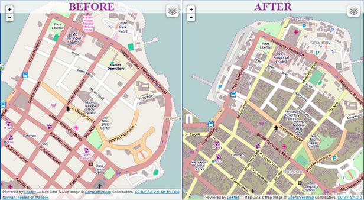
Di Indonesia, penggunaan Tasking Manager juga digunakan untuk respon ketika bencana terjadi. Salah satu contohnya adalah ketika bencana gempa dan tsunami terjadi di Selat Sunda pada Desember 2018. Dalam kurun waktu 1 bulan, seluruh daerah terdampak sudah selesai dipetakan oleh sekitar 60 orang.
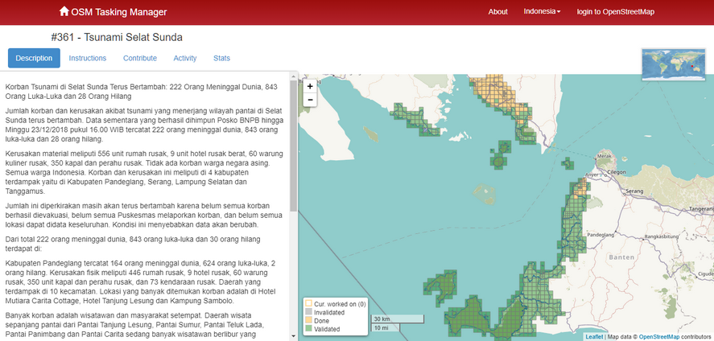
II. Membuat Proyek Tasking Baru
Untuk dapat membuat tasking baru di tasking manager, Anda harus terlebih dahulu mempunyai akses sebagai project manager. Apabila Anda belum memiliki akses maka anda harus diatur sebagai manager proyek agar dapat membuat tasking, Anda bisa mengajukan akses tersebut dengan mengirim e-mail ke team.id@hotosm.org untuk tasking manager khusus di Indonesia. Setelah Anda berhasil mendapatkan akses untuk membuat tasking, Anda dapat melihat pada bagian kanan atas dari halaman depan tasking dan mengklik tombol Create New Project.

Ada beberapa tahapan yang harus dilakukan dalam membuat tasking:
a. Penentuan Wilayah Kerja
-
Step 1: Define Area = mengatur area kerja
Setelah Anda menekan tombol Create New Project, Anda akan diarahkan pada halaman pengaturan pertama, yaitu mengatur area proyek pemetaan Anda. Terdapat dua cara dalam mengatur area proyek pemetaan:
- **Draw**= dengan menggambar secara bebas area yang Anda inginkan
- **Import**= dengan menggunakan data spasial yang berformat GeoJSON, KML, OSM atau SHP yang terkompresi dalam bentuk zip.
Klik Next apabila Anda sudah selesai mengatur area kerja Anda.
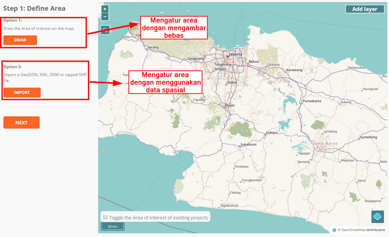
-
Step 2: Choose Tasks Step = mengatur tipe pembagian area kerja
Setelah Anda sudah mengatur area kerja, tahapan berikutnya adalah Anda diminta untuk mengatur bentuk pembagian area kerja. Terdapat dua tipe pembagian area kerja: kotak (Square Grid) dan bebas (Arbitary Tasks). Jika memilih bentuk kotak, area kerja Anda akan dibagi menjadi beberapa kotak persegi dengan ukuran yang sama. Sementara itu apabila Anda memilih bentuk bebas. Area kerja Anda akan dibagi menjadi beberapa ukuran acak. Klik Next untuk menuju tahapan berikutnya.
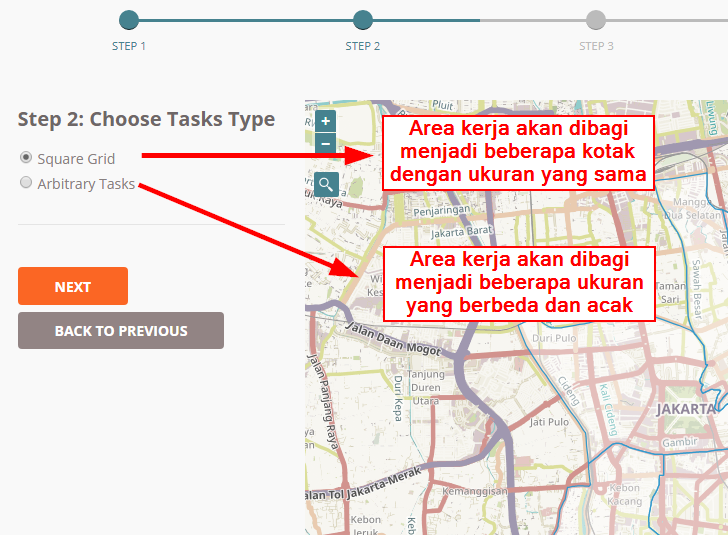
-
Step 3: Set Task Sizes = Mengatur besar luasan kotak kerja
Pada tahapan ini, Anda akan mengatur besar luasan kotak kerja. Diasumsikan bahwa pada tahapan sebelumnya Anda memilih pembagian area kerja dalam bentuk kotak dan pada tahapan ini Anda akan menentukan jumlah kotak yang ada di dalam area yang Anda tentukan. Semakin besar ukuran kotak kerja, maka jumlah pembagi kotak kerja akan lebih sedikit. Namun hal tersebut juga berarti para relawan pemetaan yang ikut memetakan area Anda bisa jadi mendapatkan pembagian luas wilayah yang sangat besar dan begitu juga sebaliknya.
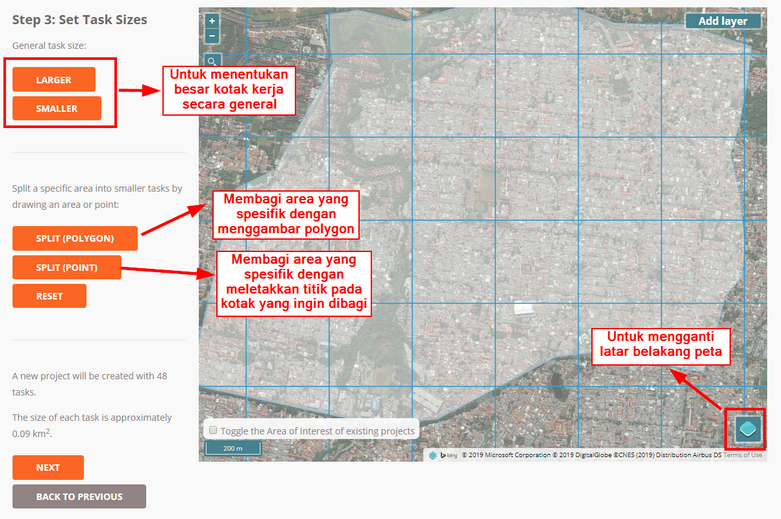
Catatan: Sedikit tips dalam menentukan luasan kotak kerja, Anda tentunya menginginkan membuat kotak kerja yang tidak terlalu besar dan tidak terlalu kecil. Untuk menentukannya Anda bisa melihatnya melalui kepadatan jaringan jalan yang terlihat pada area pemetaan Anda, dengan menggunakan citra satelit Bing atau Mapbox. Apabila Anda melihat kotak yang berisikan daerah padat, Anda bisa membagi kotak tersebut ke dalam beberapa kotak kecil dengan menggunakan tombol Split (Polygon) atau Split (Point).
-
**Step 4: Trim Project**= Memotong kotak kerja yang tidak dibutuhkan
Setelah Anda mengatur besaran kotak kerja, pada tahapan selanjutnya Anda akan diarahkan untuk memotong kotak kerja hanya spesifik ke area proyek Anda saja. Dengan menggunakan fitur ini, Anda bisa menghapus kotak kerja yang berada di luar area kotak kerja dan menyisakan kotak kerja yang sesuai dengan area batas proyek kerja Anda. Lama tidaknya proses memotong kotak ini tergantung dari besar luasan proyek kerja Anda.
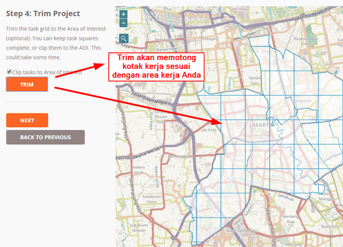
-
**Step 5: Review**=Memberikan nama proyek
Tahapan selanjutnya adalah Anda memberikan nama untuk proyek pemetaan Anda. Pada tahapan ini sebaiknya Anda memberikan nama yang mudah untuk dicari oleh para pengguna lainnya. Pada bagian ini juga terdapat keterangan jumlah grid/kotak yang akan Anda kerjakan, seperti gambar di bawah ini ada 56 grid/kotak. Klik Create untuk membuat proyek tasking manager Anda.
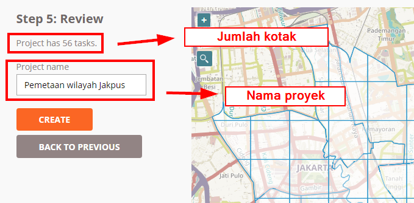
b. Pengaturan Deskripsi Proyek
Setelah selesai membuat proyek, Anda akan diarahkan ke pengaturan tambahan dimana Anda akan memasukkan deskripsi proyek, instruksi, area prioritas, dsb. Anda harus memasukkan deskripsi proyek dan instruksi data yang dipetakan, sementara yang lainnya adalah opsional.
-
Description= Memberikan deskripsi proyek
Ada beberapa hal yang Anda lakukan pada bagian ini.
- Anda akan mengatur status proyek tasking Anda (Draft, Published, Archived). Status Draft merupakan pengaturan bawaan saat pertama kali proyek berhasil dibuat. Apabila sebuah proyek tasking masih berstatus draft, para relawan pemetaan tidak akan dapat ikut membantu memetakan proyek tasking Anda. Status Published berarti proyek tasking Anda sudah dipublikasikan sehingga orang lain dapat melihat dan ikut membantu memetakan tasking Anda. Status Archived berarti proyek tasking Anda sudah diarsipkan karena sudah selesai atau ada proyek tasking baru dengan area yang sama. Pilih Published agar para sukarelawan dan tim Anda bisa melihat tasking Anda.
- Anda akan mengatur prioritas tasking Anda. Pada tasking manager, Anda akan diberikan tiga pilihan prioritas yaitu mendesak, tinggi, sedang, dan rendah dimana masing-masing tingkat memiliki arti yang berbeda-beda. Anda bisa mengatur tasking Anda ke dalam tingkat mendesak/urgent apabila proyek tasking yang dibuat oleh Anda bertujuan untuk segera dipetakan seperti pemetaan respon saat bencana terjadi sehingga proyek tasking Anda akan ditampilkan pada urutan teratas di daftar tasking. Atur prioritas ke tingkat tinggi/high apabila kegiatan pemetaan Anda merupakan kegiatan pemetaan untuk respon kebencanaan namun bencana tersebut telah melewati fase tanggap darurat. Atur prioritas ke sedang/medium apabila proyek pemetaan Anda tidak terlalu mendesak untuk dipetakan namun termasuk kedalam lingkup pemetaan untuk kebencanaan. Atur prioritas ke rendah/low apabila kegiatan proyek tasking Anda tidak mendesak dan bukan merupakan kegiatan untuk pemetaan kebencanaan.
- Anda akan mengatur ringkasan (Short description) dan deskripsi dari tasking manager Anda. Dalam memberikan ringkasan (short description) dan deskripsi untuk tasking Anda, terdapat pilihan bahasa dari bahasa Inggris (EN) dan Indonesia (ID). Pilihan bahasa tersebut akan muncul saat pengguna mengubah bahasa situs tasking manager ke bahasa yang mereka inginkan. Apabila Anda ingin memasukkan bahasa Indonesia saja, pilih ID sebagai pilihan bahasa dan kemudian isi deskripsi singkat dan deskripsinya dalam format markdown. Markdown merupakan format yang sama dengan format html dengan penulisan yang lebih sederhana. Untuk panduan penulisan dengan format markdown, Anda bisa melihatnya di situs Markdown Guide1.
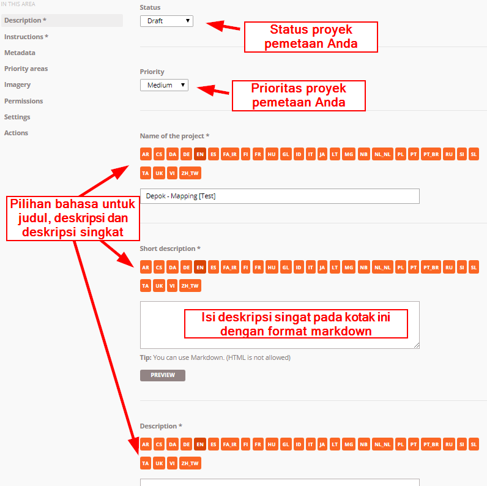
-
**Instructions**= Memberikan instruksi pemetaan
Pada bagian ini Anda akan memberikan informasi mengenai objek apa saja yang harus dipetakan pada Tasking Manager yang telah Anda buat.
- Pada bagian Entitles to map Anda bisa menjabarkan obyek apa saja yang Anda butuhkan dari proyek tasking ini. Misalnya Anda membutuhkan data jaringan jalan, bangunan dan sungai. Maka pada bagian ini, Anda bisa menjabarkan tentang obyek-obyek tersebut.
- Pada bagian Changeset comment Anda bisa mengatur komen changeset bawaan yang akan muncul otomatis pada saat pengguna akan mengunggah penambahan data mereka ke OpenStreetMap.
- Pada bagian Detailed Instruction Anda bisa memasukkan instruksi pemetaan secara detail. Penjelasan ini sangat membantu relawan yang ingin berkontribusi dalam proyek tasking Anda tetapi belum memiliki pengalaman pemetaan baik di Tasking Manager maupun di OpenStreetMap. Anda bisa memberikan instruksi yang sedetail mungkin pada bagian ini.
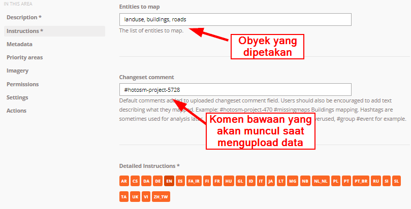
- **Metadata**= Mengeset metadata proyek (opsional)
-
Mapper Level. Pada bagian ini, Anda bisa mengatur tingkat kesulitan proyek pemetaan dan mengaturnya berdasarkan persepsi Anda sendiri. Sebagai contoh apabila daerah yang dipetakan merupakan daerah pemukiman padat penduduk dengan kondisi citra satelit yang tidak terlalu baik dan kebutuhan data yang dipetakan adalah data bangunan umum, Anda bisa mengatur tingkat kesulitan untuk memetakan daerah tersebut termasuk tinggi atau sedang.
-
Type(s) of Mapping. Anda bisa mengidentifikasi obyek yang akan dipetakan pada proyek tasking Anda dengan memberikan centang pada daftar obyek yang ada di bagian Type(s) of Mapping.
-
Organization Tag. Pada bagian ini Anda bisa memberikan tag organisasi Anda untuk memudahkan pencarian proyek tasking pada kolom pencarian.
-
Campaign Tag. Sama seperti organization tag pada bagian ini Anda bisa menambahkan tag yang sesuai dengan proyek pemetaan Anda agar memudahkan pencarian.
-
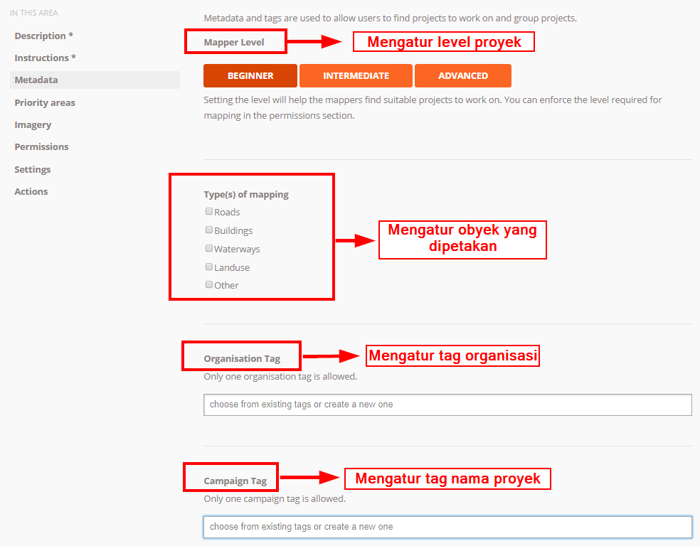
- Priority Areas = Mengatur area prioritas (opsional)
Pada menu ini Anda bisa menggambar area prioritas untuk proyek _tasking _Anda dengan beberapa cara:
- Menggambar area dengan menggunakan tombol DRAW POLYGON
- Menggambar area berbentuk kotak dengan menggunakan tombol DRAW RECTANGLE
- Menggambar lingkaran dengan menggunakan tombol DRAW CIRCLE
- Mengubah area prioritas yang sudah digambar dengan menggunakan tombol EDIT
- Menghapus area prioritas dengan menggunakan tombol DELETE, dan
- Menghapus semua area prioritas dengan menggunakan tombol CLEAR ALL
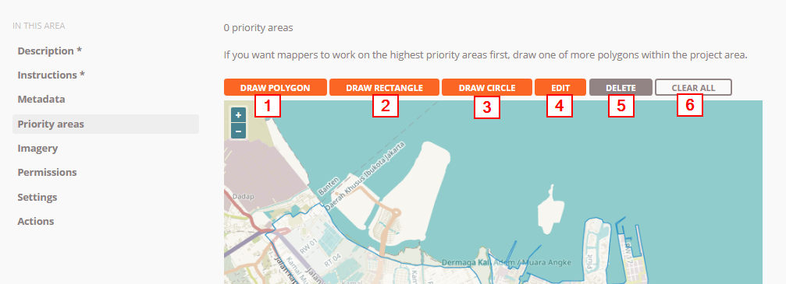
- Imagery = Memberikan citra satelit tambahan (opsional) Apabila Anda mempunyai citra satelit tambahan dalam format TMS (Tile Map Service). Anda bisa memasukkan url nya di bagian ini. Selain itu Anda juga perlu mengatur lisensi dari citra satelit yang anda gunakan. Anda harus memastikan citra satelit yang Anda gunakan mempunyai lisensi yang dapat digunakan untuk pemetaan di OpenStreetMap.
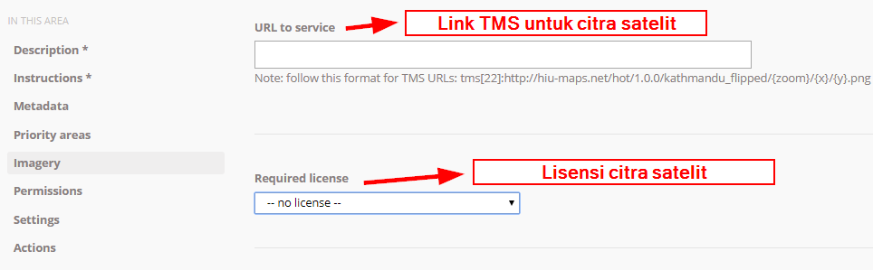
-
Permissions = Mengatur tingkat izin proyek (opsional) Pada bagian ini Anda bisa mengatur tasking proyek Anda hanya dapat diakses oleh pengguna dengan tingkat skill mulai dari tingkat pemula sampai mahir. Dengan mengaktifkan fitur Mapper Level, proyek tasking Anda hanya bisa dikerjakan oleh pengguna dengan tingkat yang telah Anda tentukan.
Apabila Anda mengaktifkan Validator Level maka pengguna yang bisa mengakses tasking Anda untuk melakukan validasi data adalah pengguna dengan tingkat level validator.
Apabila Anda mengaktifkan Private Project maka tasking Anda hanya akan bisa diakses oleh pengguna yang namanya (user OSM) sudah Anda tentukan sebelumnya. Orang lain diluar nama yang telah diatur tidak dapat melihat tasking yang dibuat oleh Anda.
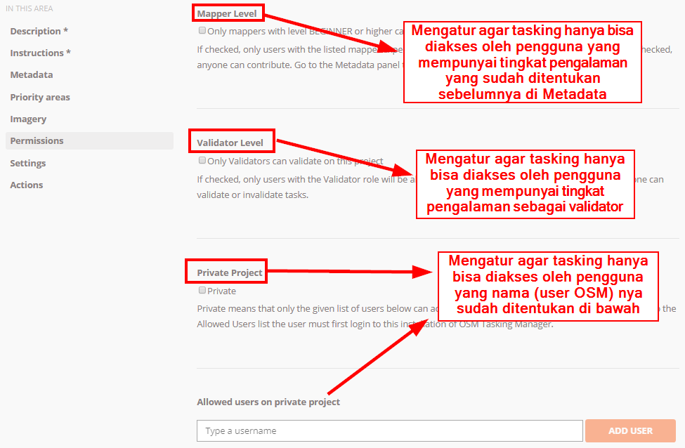
Setelah selesai dengan pengaturan tambahan. Anda bisa menyimpan proyek tasking Anda dengan mengklik tombol SAVE CHANGES yang ada pada bagian bawah.
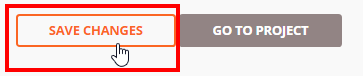
III. Pengelolaan Proyek Tasking
a. Mengubah Instruksi dan Deskripsi
Jika Anda ingin menambahkan beberapa kalimat instruksi baru atau ingin mengubah deskripsi proyek Anda seiring dengan berjalannya waktu pemetaan di tasking Anda, Anda bisa memilih tombol Edit Project pada halaman tasking tersebut . Setelah itu Anda bisa langsung merubah deskripsi dan instruksi untuk tasking Anda.
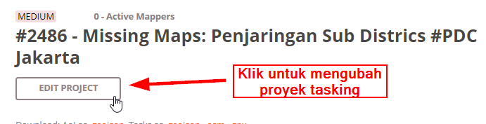
b. Validasi Hasil Kerja
Seiring dengan berjalannya proyek tasking Anda dan bertambahnya data di daerah yang sedang Anda kerjakan, beberapa relawan mungkin ada yang belum mahir melakukan digitasi dengan OSM sehingga Anda membutuhkan kegiatan validasi untuk memperbaiki data. Untuk lebih jelasnya, Anda bisa membaca modul Penjaminan Kualitas Data dengan Tasking Manager. Silahkan klik tombol Validate untuk beralih ke halaman validasi untuk proyek tasking Anda.
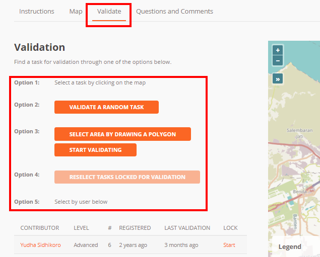
Terdapat 5 opsi pada halaman validasi hasil di tasking manager:
- Memilih sendiri kotak pada peta. Dengan cara ini Anda tinggal memilih kotak yang tersedia pada peta untuk memulai validasi.
- Memilih kotak secara acak. Dengan cara ini Anda akan dibantu untuk memilih kotak oleh tasking manager.
- Memilih kotak dengan menggambar polygon. Dengan menggunakan fitur ini. Anda bisa memilih beberapa kotak untuk divalidasi dengan menggambar sebuah polygon atau area.
- Memilih kotak yang sudah terkunci sebelumnya. Apabila Anda sudah mendapatkan kotak untuk divalidasi tetapi tidak ingat telah memilih kotak tersebut, Anda bisa menggunakan fitur ini. Dengan mengklik tombol ini, Anda akan diarahkan ke kotak yang telah dipilih sebelumnya.
- Memilih sesuai dengan nama pengguna. Anda juga dapat melakukan validasi pada sebuah kotak dengan memilih berdasarkan nama pengguna yang ikut serta untuk memetakan di proyek tasking Anda.
c. Mengubah Area Prioritas
Anda bisa menentukan area prioritas untuk dipetakan terlebih dahulu. Caranya adalah dengan mengklik Edit Project terlebih dahulu dan setelah itu Anda menuju ke menu Priority areas. Silahkan ubah dan tambahkan area prioritas Anda dengan menggunakan cara yang sudah dijelaskan pada bagian sebelumnya.
d. Beberapa Fitur Aksi di Tasking Manager
Pada menu pengelolaan tasking manager Anda, terdapat beberapa tombol aksi:
- Mengirim pesan ke para kontributor proyek tasking Anda. Dengan menggunakan tombol Message All Contributors Anda bisa mengirim pesan yang akan terbaca oleh semua kontributor proyek tasking Anda. Hal ini tentunya sangat berguna apabila terdapat perubahan pada obyek yang dipetakan atau perubahan area prioritas.
- Mengatur semua tasking secara serentak. Terdapat alat yang bisa Anda gunakan untuk mengatur semua tasking secara serentak.
- Map All Tasks digunakan untuk menandakan bahwa semua kotak pada tasking Anda sudah terpetakan semua.
- Invalidate All Tasks digunakan untuk membatalkan semua kotak yang sudah tervalidasi
- Validate All Tasks digunakan untuk mengesahkan semua kotak yang sudah terpetakan
- Reset All Bad Imagery Tasks digunakan untuk mengatur ulang semua kotak yang memiliki keterangan bahwa citra satelit pada kotak tersebut tidak bisa digunakan.
- Menghapus proyek tasking. Dengan menggunakan tombol Delete Project Anda bisa langsung menghapus proyek tasking Anda dengan catatan bahwa belum ada kontributor yang berpartisipasi dalam tasking Anda
- Mengatur ulang proyek tasking. Dengan tombol Reset Tasks Anda akan mengatur ulang tasking Anda tetapi masih dapat menyimpan histori kontributor yang ikut turut serta memetakan proyek tasking Anda.
- Menduplikasi tasking. Dengan tombol Clone Project Anda bisa menduplikasi tasking Anda dan membuat tasking baru dengan deskripsi dan area kerja yang sama seperti tasking sebelumnya. Hal yang berbeda adalah proyek tasking hasil duplikasi Anda akan dalam status Draft dan untuk bagian area yang ingin dipetakan, jumlah kotak dan area prioritas tidak akan terduplikasi sehingga Anda harus melakukan pengaturan lebih lanjut.
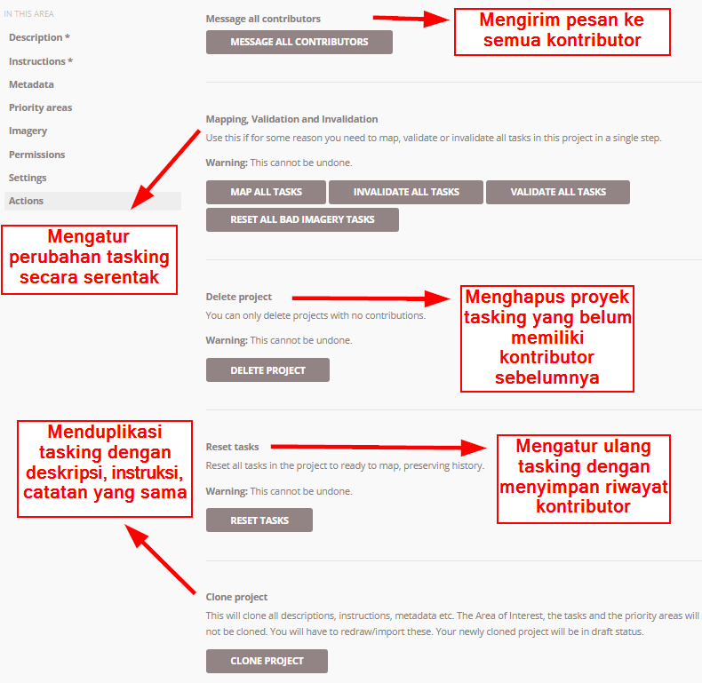
e. Mengarsip Proyek Tasking
Apabila proyek tasking sudah selesai, Anda disarankan untuk mengarsipkan proyek tasking yang telah Anda buat. Hal ini bertujuan untuk menghindari kontributor untuk melakukan pemetaan pada proyek tasking tersebut. Untuk mengarsip proyek tasking , klik Edit Project dan pilih menu Description. Pada menu status, ubah dari Published ke Archived. Klik Save Changes untuk menyimpan perubahannya.
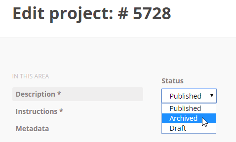
RINGKASAN
Selamat! Saat ini Anda telah berhasil mempelajari cara membuat dan mengelola proyek pada tasking manager. Dengan menggunakan tasking manager, proyek pemetaan Anda akan menjadi lebih teratur. Hal yang harus diperhatikan, ketika Anda membuat tasking manager, proyek tersebut harus diselesaikan dan diperhatikan tidak hanya kuantitas data tetapi juga kualitas data.